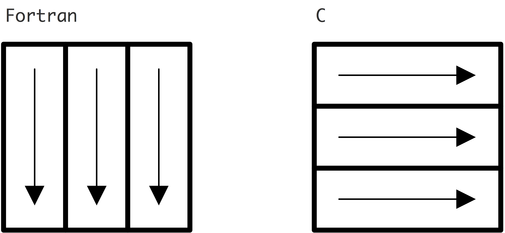

crumb trail: > array > C arrays
crumb trail: > array > C arrays > Static arrays
The easiest way to create arrays is with the `square bracket notation':
int x[5]; int y[6][7];The same square brackets are used for indexing:
for (int row=0; row<nrows; row++) for (int col=0; col<ncols; col++) moments[row][col] = pow( coefficient[row],(double)col );In these examples we used a constant for the array bound. See section 32.1.3 for using a variable.
crumb trail: > array > C arrays > Static arrays > Allocation
What we are calling `static' arrays are actually technically called automatic array s. Static arrays are arrays with the keyword static :
static float x[5]; // a truly `static' array int main() { float y[6]; // this one is `automatic' }Automatic arrays, which we will from now on call `static', are usually allocated on the stack , because they have static scope:
// variables `x' and `y' don't exist if (whatever) { int x; float y[2]; // variables `x' and `y' exist for the duration of the conditional .... } // variables `x' and `y' don't exist anymoreThus, creating too many of these may lead to stack overflow . Check out the limit command.
crumb trail: > array > C arrays > Static arrays > Passing to functions
You can pass an array to a function, indicating in the function prototype that it is an array. However, the function can not query the array length, so that has to be passed separately if this information is needed.
\snippetwithoutput{cansiset1d}{array}{set1d}
You can also use the equivalence of arrays and pointers:
\snippetwithoutput{cansisetstar}{array}{setstar}
crumb trail: > array > C arrays > Multi-dimensional arrays
Declaring a multi-dimensional array:
int y[6][7];Initialization:
int z[2][2] = { {1,2},{3,4} };Such arrays are stored in row-major ordering, meaning that rows are contiguous in memory.
\snippetwithoutput{cansiset2d}{array}{set2d}
Passing them to functions is a little more tricky: all dimensions except the first have to be pass explicitly.
\snippetwithoutput{cansiset2d}{array}{pass2d}
crumb trail: > array > C arrays > Variable-length arrays
In Ansi C , arrays had to be declared with compile-time bounds, as above. The C99 standard has added variable-length array s:
\snippetwithoutput{c99array}{array}{set99}
crumb trail: > array > C arrays > Dynamically allocated arrays
Before C99's variable-length arrays, the only way to create arrays with a size determined at run-time was through dynamic allocation , using the malloc keyword. This
Indexing, both in the scope where the array is created, and in subprograms it is passed to, is exactly the same as above. For passing such arrays to functions, the type is now float* : \snippetwithoutput{cmallocpass}{array}{cmalloc}
crumb trail: > array > C arrays > Dynamic arrays, scope, memory leaks
The memory allocated for dynamic arrays is not subject to scope:
void create( float **x,int len ) { float *x_space = (float*) malloc(len*sizeof(float)); *x = s_space; } int main() { float *x; create(&x,50); }Thus, this allocation has to happen on the heap This is good for flexible programming, but may lead to memory leak s.
crumb trail: > array > C arrays > Multi-dimensional dynamic arrays
Solution 1:
// cmalloc2d.c int (*numbers)[cols] = malloc( sizeof(int[rows][cols]) );
This allocates a single block, consisting of arrays of length cols : \snippetwithoutput{cmallocsizenn3}{array}{rowlength}
Solution 2:\\ create a one-dimensional array, and convert multi-dimensional indices to one-dimensional.
\snippetwithoutput{cmalloc2d}{array}{cmallocpass}
crumb trail: > array > C arrays > Type theory of arrays
After declaring
int x[5][6];the expression x[3] stands for an array of length 6, compatible with being an int* .
Does that mean that \lstinline{x} itself is of type int** ?No, it is not. Careful parsing of the standard shows that x itself is also of type int* ! Above you already saw that multi-dimensional arrays are contiguous in memory, so you can step through their content with pointer arithmetic.
Let's explore the notion of int** and arrays a little more.You can in fact write:
int **x; x = (int**)malloc( nrows*sizeof(int*) ); for (int irow=0; irow<nrows; irow++) x[irow] = (int*)malloc( ncolumns*sizeof(int) ); and the resulting object can also be indexed with x[i][j] .However, this has significant disadvantages:
crumb trail: > array > C++ arrays
The C arrays described above are available in C++, with exception of variable-length arrays. However, better mechanisms exist.
crumb trail: > array > C++ arrays > Array
The C++ std::array is close to the C `static arrays'
(section 32.1.1 ) in that it requires bounds that are known at compile time.
std::array<float,8> eight_floats;Note that the size is a template parameter, not a parameter of the constructor.
While the compile-time bound is a severe restriction on flexibility, this is the most efficient array variant in C++:
However, storage for these arrays happens on the heap, rather than on the stack as for C static arrays.
The convenience of having methods such as size and bound checking through at makes these arrays preferable over the C variant.
crumb trail: > array > C++ arrays > Vector
The std::vector also creates space on the heap. By contrast with std::array
This first difference means that the vector now needs a control block that contains the size and the allocated capacity. The second difference implies that certain operations can be computationally inefficient.
crumb trail: > array > Fortran
crumb trail: > array > Fortran > Static
Arrays can be created with compile-time bounds:
Integer,dimension(5) :: x Integer,parameter :: size = 6 Integer,dimension(size,size) :: yThese arrays are scoped.
Unlike in C, Fortran arrays can have a specified lower bound:
Integer,dimension(-1:7) :: x
crumb trail: > array > Fortran > Dynamic
Real*4,dimension(:),allocatable :: x Integer :: n Read *,n Allocate(x(n))Such arrays are also scoped, and can therefore not lead to memory leaks, unlike malloc 'ed arrays in C.
crumb trail: > array > Fortran > Memory layout
Fortran arrays are column-major: the columns are stored contiguously. For higher dimensions this is also phrased as `the first index varies quickest'.
crumb trail: > array > Layout in memory
C and Fortran have different conventions for storing multi-dimensional arrays. You need to be aware of this when you pass an array between routines written in different languages.
Fortran stores multi-dimensional arrays in column-major order; see figure 32.1 . For two dimensional arrays A(i,j) this means that the elements in each column are stored contiguously: a $2\times2$ array is stored as A(1,1), A(2,1), A(1,2), A(2,2) . Three and
FIGURE 32.1: Fortran and C array storage by columns and rows respectively
higher dimensional arrays are an obvious extension: it is sometimes said that `the left index varies quickest'.
C arrays are stored in row-major order: elements in each row are stored contiguous, and columns are then placed sequentially in memory. A $2\times2$ array A[2][2] is stored as A[1][1], A[1][2], A[2][1], A[2][2] .
A number of remarks about arrays in C.
careful reading of the standard reveals that a multi-dimensional array is in fact a single block of memory, no further pointers involved.
Given the above limitation on passing multi-dimensional arrays, and the fact that a C routine can not tell whether it's called from Fortran or C, it is best not to bother with multi-dimensional arrays in C, and to emulate them:
float *A; A = (float*)malloc(m*n*sizeof(float)); #define SUB(i,j,m,n) i+j*m for (i=0; i<m; i++) for (j=0; j<n; j++) .... A[SUB(i,j,m,n)] ....where for interoperability we store the elements in column-major fashion.
crumb trail: > array > Layout in memory > Array alignment
For reasons such as SIMD vector instructions , it can be advantageous to use aligned allocation . For instance, `16-byte alignment' means that the starting address of your array, expressed in bytes, is a multiple of 16.
In C, you can force such alignment with posix\_memalign . In Fortran there is no general mechanism for this. The Intel compiler allows you to write:
double precision, allocatable :: A(:), B(:) !DIR$ ATTRIBUTES ALIGN : 32 :: A, B